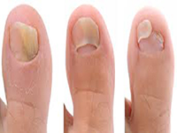

Fungus Infections:

Very often the nails and toenails turn yellowish due to a fungal infection.
The nails can turn brown and green too.
Fungal infections affect the toenails more than finger nails.
Soak the feet or hands in a bowl with equal parts of water and apple cider.
Dry feet thoroughly and apply some olive oil on the toes and cuticles.
At times it may be months before a fungus infection really clears up.